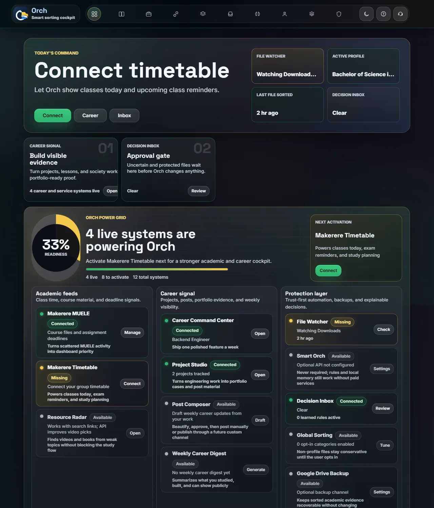
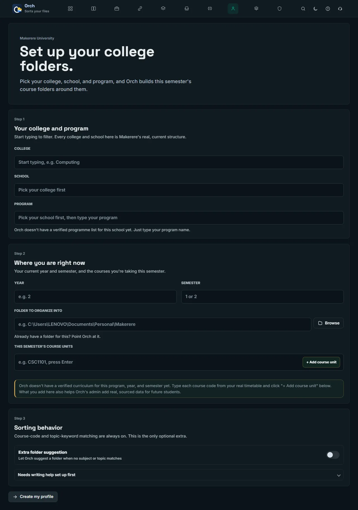
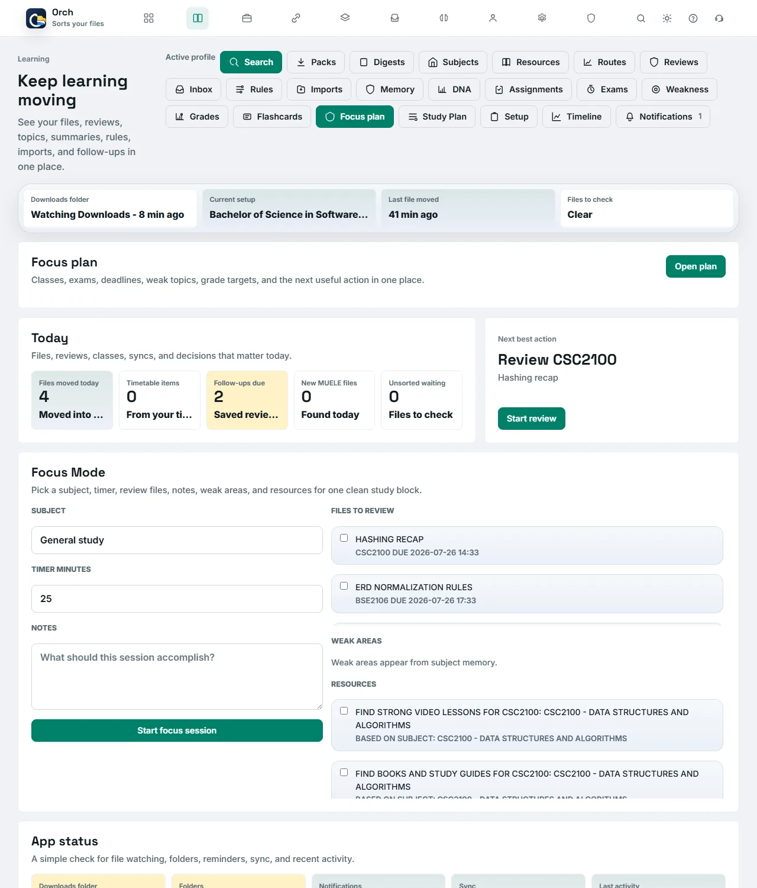
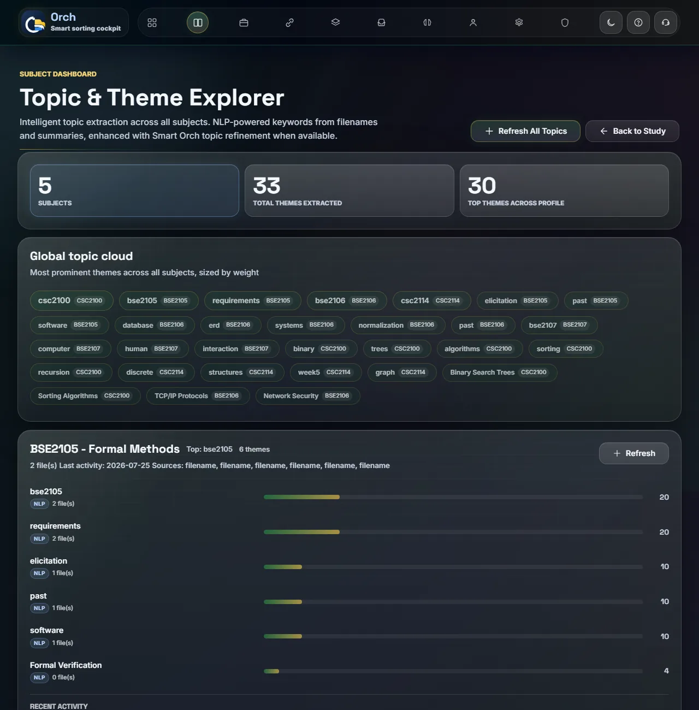
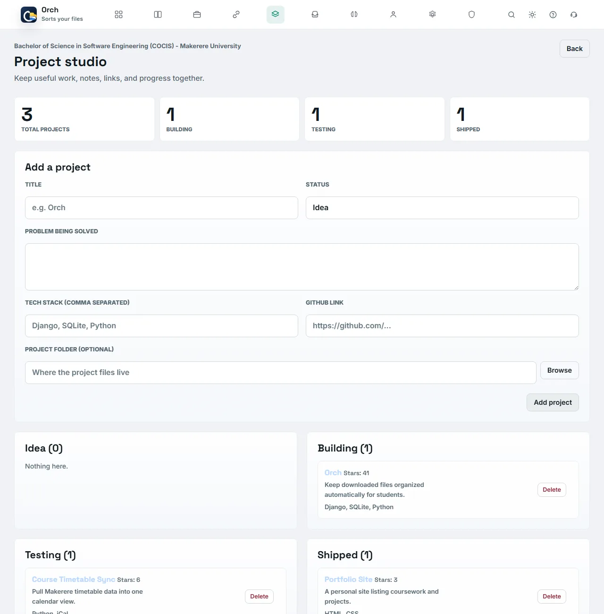

Your Downloads folder is not a filing system. Orch fixes that automatically.
Point Orch at your Downloads folder once. From then on, every course PDF, past paper, and assignment gets routed into the right course folder the moment it lands, then turned into a full study and career cockpit, with zero manual filing.

Every semester starts organized. By week 6, it never is.
Downloads is a junk drawer
Untitled.pdf, doc(3).docx, IMG-WA004.jpg — 300+ files deep, and you can't remember which one was the CSC2100 past paper.
You rebuild the same folders every semester
Year 2 > Semester 1 > course code > category, by hand, for every single unit, every single semester.
Deadlines live in a WhatsApp group
Course reps post assignment dates once, they scroll past, and you find out it was due yesterday.
Revision starts from zero
No record of what you've already covered, what's weak, or what past papers keep repeating the same topics.
Orch runs quietly in the background and turns all four of these into one folder structure and one dashboard.
From download to done in four steps
Download and run
Grab Orch.exe from GitHub Releases and run it directly. No installer, no admin rights, no Python.
Answer the setup wizard
Tell Orch if you're a Makerere student, pick your college/school/programme, and it builds this semester's folders for you.
Keep browsing normally
Orch watches your Downloads folder in the background. Every new file gets read and routed the moment it lands.
Open the cockpit any time
Review what moved, track deadlines, revise by topic, and turn your semester's work into a career asset.
Sorting is the entry point. This is the whole cockpit.
Every feature below is real and already in the app — nothing here is a roadmap promise.
Automatic routing
Files are sorted by course code or topic keyword into Year/Semester/Course/Category, with the category (notes, assignments, past papers, reports) detected from the filename itself.
Makerere setup wizard
A guided flow across all 10 colleges and every school in them, verified against each college's real site, not a generic dropdown.
MUELE sync
Connect Makerere's Moodle-based MUELE platform to pull course files, assignment deadlines, and calendar events in automatically.
Study cockpit
A review queue with spaced repetition, per-subject topic extraction, weak-area tracking, and a resource radar for finding help fast.
Trust-first automation
The Decision Inbox holds anything Orch isn't confident about for your approval, and Organization Memory shows every rule it has learned from you, fully editable.
Career Command Center
Project Studio tracks what you're building end to end, then drafts portfolio-ready posts from your real project work, exported or published on your terms.
Document summaries
Turn any sorted PDF or Word document into a structured study companion that cross-references the other files already sitting next to it. Optional, needs your own free API key.
Nothing is ever silent
Every move is logged with the exact folder, method, and timestamp, searchable on a dashboard, with one-click undo, always.
Local-first, always
The dashboard only ever binds to your own machine. Your files, your database, your Downloads folder — nothing leaves your laptop.
The real app, not a mockup
Every screen below is Orch's actual interface, running live in a browser — with sample course data standing in for a real semester.

Guided setup, built specifically around Makerere's real structure

One cockpit for focus sessions, deadlines, and revision

Topic extraction across every subject, sorted by weight

Project Studio turns coursework into portfolio evidence
Verified structure, not a guess
The first time you set up a profile, Orch asks whether you're a Makerere student. If you are, everything from there is grounded in the university's real, current structure — not a generic template.
- Typeahead search across every college and school, sourced from each college's own official site.
- Per-programme, per-semester course units, with a "Guide" button for a general AI academic overview of what a unit typically covers.
- Connects to MUELE to sync course files, assignment deadlines, and calendar events automatically.
- Anything Orch doesn't have verified data for yet still works — you type it once, and it can help future students too.

Stop sorting files by hand this semester
Free, one file, runs entirely on your own laptop. Set it up once during a study session and forget it's there.